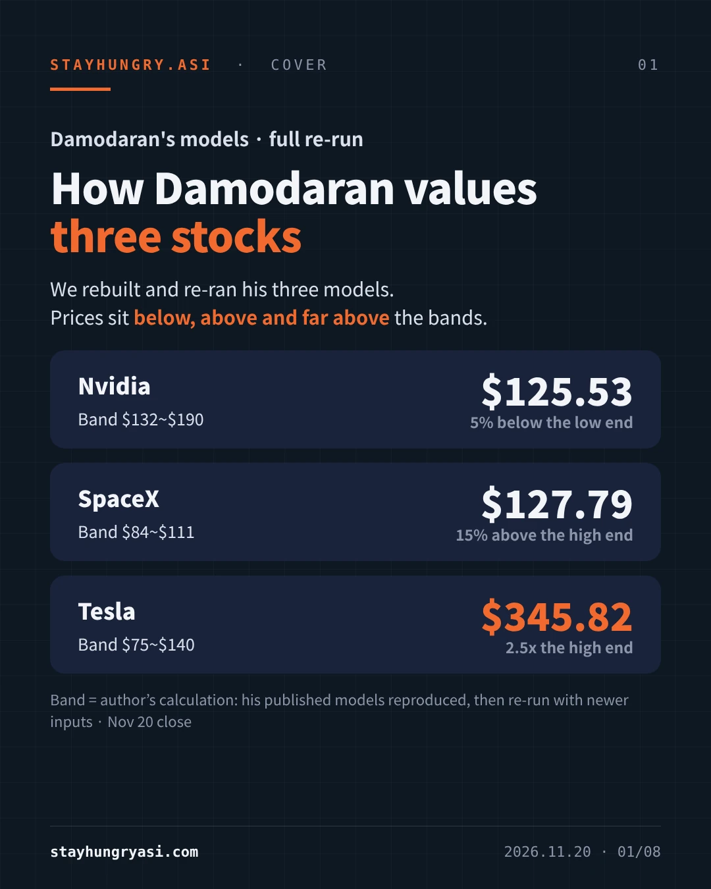
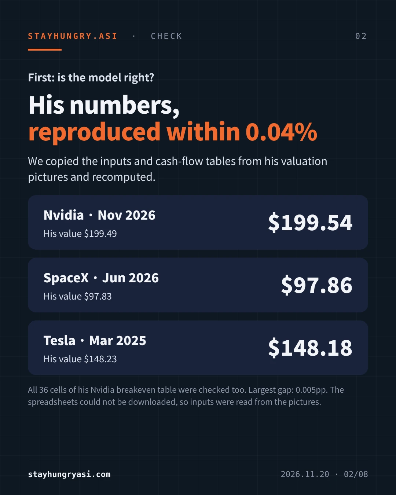
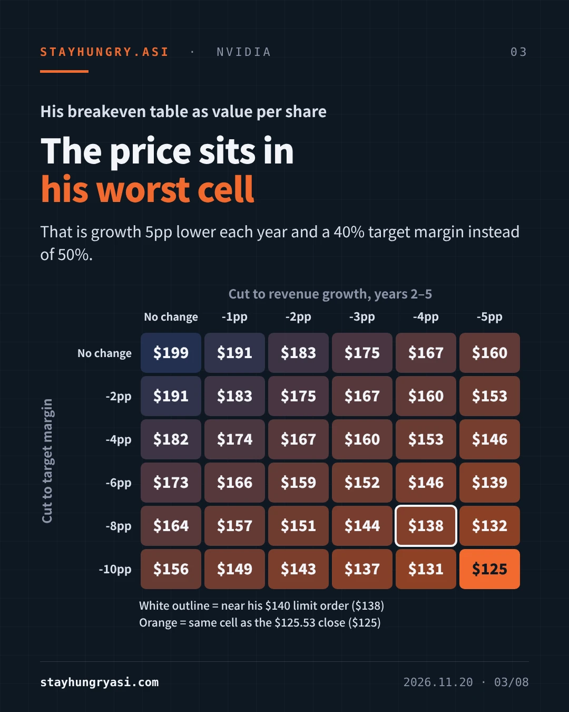
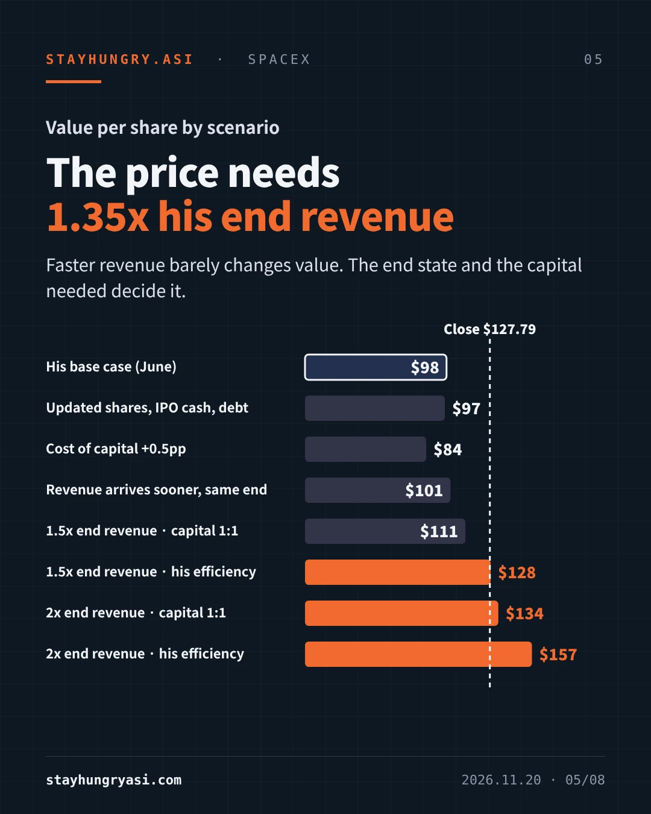
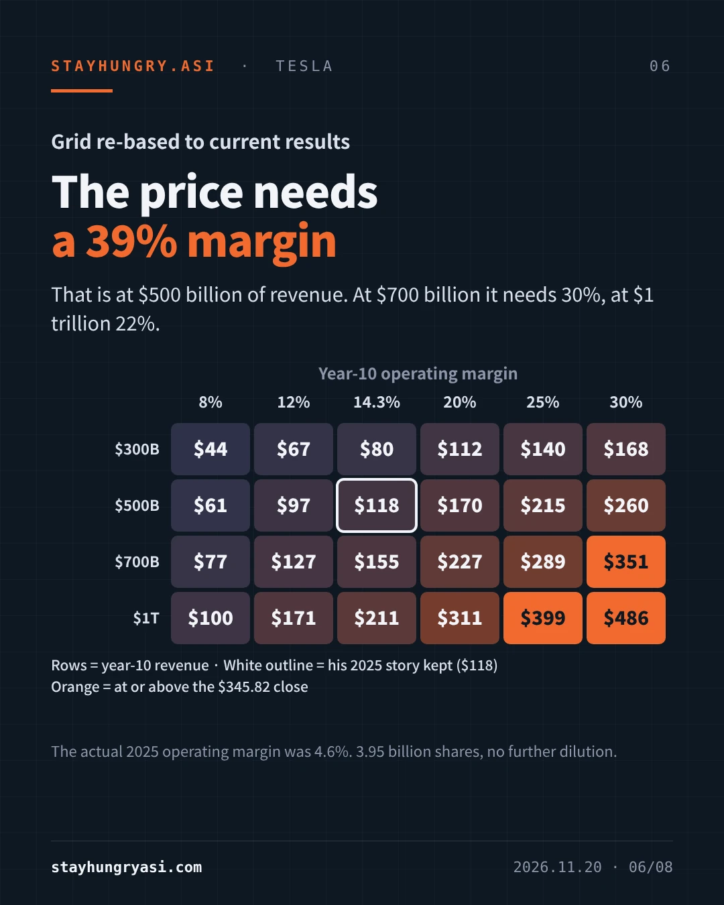
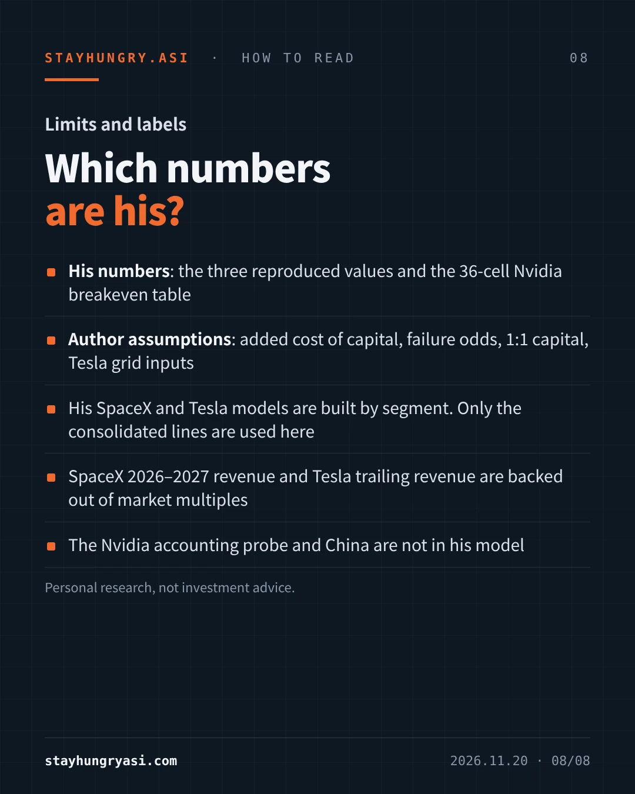

Data as of the US close on Nov 20, 2026 · stayhungryasi.com
Notation: the reproduced values and the Nvidia breakeven table are figures published by Professor Aswath Damodaran. The bands and scenarios are the author’s calculations from a rebuild of his models. They are not ranges he published. Items that could not be confirmed are marked ‘unverified’. Not investment advice.
The key points in 8 cards. Tap an image to enlarge it.
| Stock | His value | Re-run band | Optimistic case | Nov 20 close | Position |
|---|---|---|---|---|---|
| Nvidia | $199.49 | $132~$190 | ~$244 | $125.53 | 5% below the low end |
| SpaceX | $97.83 | $84~$111 | $128~$157 | $127.79 | 15% above the high end |
| Tesla | $148.23 | $75~$140 | $190~$290 | $345.82 | 20% above the optimistic high end |
The spreadsheets could not be downloaded. The inputs and 10-year cash-flow tables were copied from the valuation picture in each post, and a model with the same structure was rebuilt.
| Model | His value per share | Reproduced | Gap |
|---|---|---|---|
| Nvidia (post of 2026-11-19) | $199.49 | $199.54 | +0.03% |
| SpaceX (post of 2026-06-04) | $97.83 | $97.86 | +0.04% |
| Tesla (post of 2025-03-15) | $148.23 | $148.18 | -0.03% |
All 36 cells of the breakeven table in the Nvidia post were checked as well; the largest gap is 0.005pp. The check also confirmed that ‘drop in revenue growth’ in his table lowers growth in years 2–5 and fades years 6–10 down from that level.
His assumptions: base revenue of $303 billion, 45% growth in year 1, 20% in years 2–5, a 50% target operating margin (66.5% today), and a cost of capital moving from 9.79% to 9.00%. About $500 billion of commitments are deducted as debt. Value per share is $199.49.
| Scenario | Value per share | Type |
|---|---|---|
| His base case | $199.49 | Damodaran figure |
| Growth -2pp, margin -4pp | $167 | Damodaran figure |
| Growth -3pp, margin -6pp | $152 | Damodaran figure |
| Growth -4pp, margin -8pp | $138 | Damodaran figure |
| Growth -5pp, margin -10pp | $125 | Damodaran figure |
| Cost of capital +0.5pp | $176 | Author assumption |
| Cost of capital +1.0pp | $157 | Author assumption |
| 10% chance of failure | $178 | Author assumption |
| One-time liability of $50 billion | $197 | Author assumption |
| Growth -3pp, margin -6pp, cost of capital +0.5pp, $50 billion liability | $132 | Author assumption |
| Year-1 growth of 75% (reported guidance) | $244 | Author assumption |
His assumptions: base revenue of $18.7 billion, year-10 revenue of $420 billion, a 38.1% year-10 operating margin, and a cost of capital moving from 8.37% to 8.25%. Value per share is $97.83.
| Scenario | Value per share | Type |
|---|---|---|
| His base case (June) | $97.83 | Damodaran figure |
| Updated for 13.58 billion shares, $86 billion of IPO cash and $32 billion of debt | $97 | Author assumption |
| Cost of capital +0.5pp | $84 | Author assumption |
| Cost of capital +1.0pp | $74 | Author assumption |
| Revenue pulled forward ($169 billion in 2027), same end state | $101 | Author assumption |
| Same, with 1:1 capital on new revenue | $89 | Author assumption |
| 1.5x end revenue ($630 billion), his capital efficiency | $128 | Author assumption |
| 1.5x end revenue, 1:1 capital | $111 | Author assumption |
| 1.5x end revenue, 1:1 capital, cost of capital +0.5pp | $94 | Author assumption |
| 2x end revenue ($840 billion), 1:1 capital | $134 | Author assumption |
| 2x end revenue, his capital efficiency | $157 | Author assumption |
His 2025 assumptions: year-10 revenue of $500 billion, a 14.3% year-10 operating margin, and a cost of capital moving from 9.37% to 8.35%. Value per share is $148.23. He projected 2025 revenue of $128.9 billion at a 13.2% margin; the actual result was $94.8 billion at 4.6%.
Value per share re-run from today’s starting point (revenue of about $103 billion, a 4.6% margin, 3.95 billion shares); author assumptions.
| Year-10 revenue \ margin | 8% | 12% | 14.3% | 20% | 25% | 30% |
|---|---|---|---|---|---|---|
| $300 billion | $44 | $67 | $80 | $112 | $140 | $168 |
| $500 billion | $61 | $97 | $118 | $170 | $215 | $260 |
| $700 billion | $77 | $127 | $155 | $227 | $289 | $351 |
| $1 trillion | $100 | $171 | $211 | $311 | $399 | $486 |
| Company | Year | His value | Price then | Verdict |
|---|---|---|---|---|
| 2012 | about $27 a share | IPO at $38 | Close near term, too low long term | |
| Uber | 2014 | $5.9 billion | $17 billion private valuation | Far too low |
| Airbnb | 2020 | about $54 a share | $144.71 first-day close | Too low |
| Zomato | 2021 | ₹41 a share | ₹297.85 in Sep 2024 | Too low (he said so) |
| Paytm | 2021 | ₹2,000 | ₹713 in Jul 2022 | Too high |
| Nvidia | 2023 | about $24 (split-adjusted) | about $40.90 | Sold early |
His values have mostly been too low on growth companies. No independent tally of his hit rate exists (unverified).